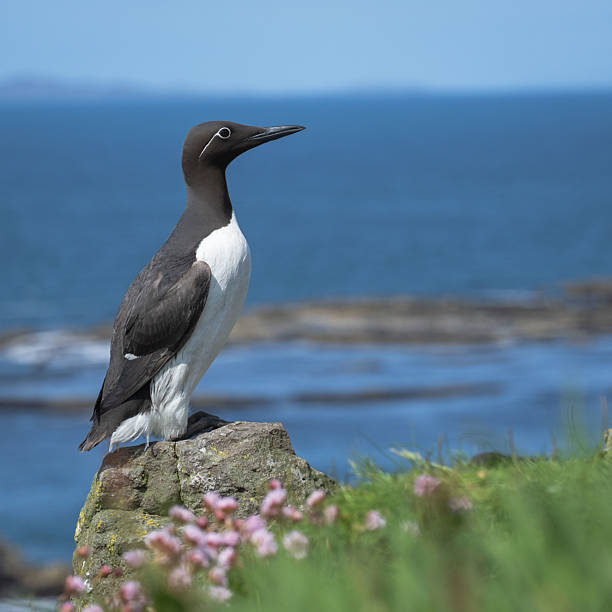
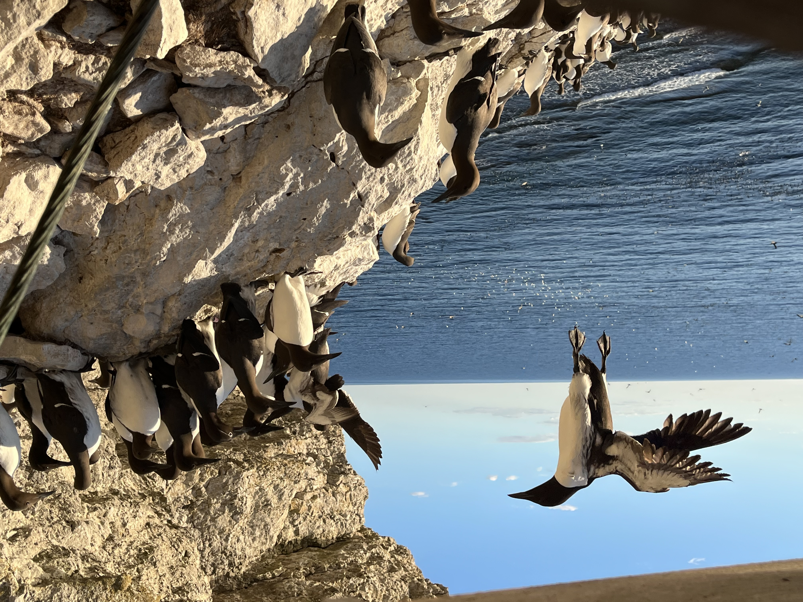
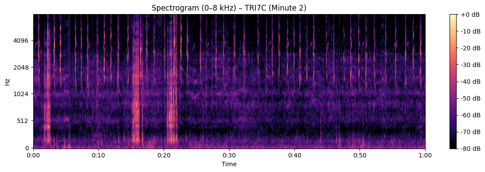

Scale without labels
The 14 TB archive contains continuous, synchronised recordings across eight microphone channels. Reviewing the full soundscape manually is impractical, and no labelled call catalogue exists for the study colony.
Home / Experience / Master's thesis
How can recurring vocal patterns be discovered in terabytes of noisy seabird audio without labelled calls? This thesis develops a data-centric AI pipeline that processes 14 TB of multi-channel recordings into 123,412 near-field acoustic events, comparing deep audio embeddings and unsupervised clustering to uncover persistent patterns in common guillemot vocalisations.

From colony to signal
Common guillemots breed in densely populated cliff colonies where overlapping calls coexist with wind, waves and background colony activity. The challenge is not simply detecting sound, but finding repeatable acoustic patterns without assuming the call categories in advance.


01 · The problem
The 14 TB archive contains continuous, synchronised recordings across eight microphone channels. Reviewing the full soundscape manually is impractical, and no labelled call catalogue exists for the study colony.
Nearby birds, distant vocalisations, wind and waves produce a complex soundscape. Spatial-proximity detection helps isolate near-field activity, but its event boundaries do not necessarily correspond to individual biological calls.
Unsupervised algorithms can produce many clusters without establishing their biological meaning. Representation choice, parameter sensitivity, stochasticity and expert review all matter when deciding which patterns deserve further investigation.
02 · The approach
The contribution is an integrated workflow rather than a newly invented neural network. Recording selection, event detection, representation choice, clustering, persistence analysis and expert interpretation are treated as connected stages.
Compute acoustic features and quality indicators across the archive to identify recording periods suitable for detailed near-field event detection.
Apply spatial-proximity detection across the microphone array. Select the TRI7C channel and retain events at least 0.2 seconds long, yielding 123,412 events and 11.83 hours of audio.
Represent each event using BirdNET, BirdAVES and OpenL3. The resulting 1,024-, 768- and 512-dimensional vectors capture different learned views of the same acoustic events.
Reduce the embeddings to 10 dimensions using UMAP, then apply HDBSCAN to identify dense acoustic groups while leaving insufficiently supported events unassigned.
Track clusters across random seeds and a 5 × 5 parameter grid. Separate Core Robust macro-clusters from Micro-Variants and Fragile clusters using predefined operational criteria.
Inspect audio, spectrograms and descriptive acoustic features. Compare persistent clusters with published guillemot and alcid vocalisations, then refine the interpretations through domain expert review.
03 · Representation learning
The same 123,412 retained events were analysed using all three representations. Their embedding dimensions and learned objectives differ, allowing a dataset-level comparison of clustering behaviour.
A bird-specific, supervised representation trained for species classification. The global-average-pooling layer produces embeddings instead of species-classification logits.
Baseline performance
A bird-focused representation based on self-supervised learning of animal vocalisations. It achieved the strongest density-based clustering result under the tested baseline configuration.
Baseline performance
A general-purpose audio representation learned through audio-visual correspondence. It provides a useful contrast to the two bird-focused representations.
Baseline performance
04 · Results
The final analysis asks three distinct questions: which representation exposes useful structure, which clusters remain stable under perturbation, and what those persistent clusters might represent biologically.
The outcome is a set of candidate acoustic categories, not a complete or independently confirmed guillemot vocal repertoire.
05 · Interpretation
The pipeline reveals recurring acoustic patterns in noisy colony recordings. Representation choice and dimensionality reduction strongly influence clustering, while robustness tests identify persistent patterns that expert review links to documented vocalisations.
Biological classification accuracy could not be verified without ground-truth labels. The analysis covered one microphone channel and one breeding season, relied on one expert's review, and detected acoustic segments rather than confirmed individual calls.
06 · Reproducibility
The thesis provides a repository containing preprocessing material, the RQ1-RQ3 analysis code, the retained TRI7C event catalogue and selected results.
The AukLab archive is jointly held by RISE Sweden and the Swedish University of Agricultural Sciences (SLU).